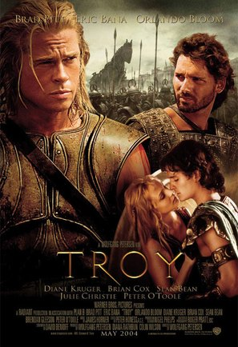

Hey there, I would like to introduce myself. I am Rahul and i am currently doing my Masters in Applied Computer Science. I have graduated with my Bachelor of Engineering in Electronics and Communication Engineering in 2017. I have been in IT industry for almost 4 years. I have worked on various technologies like Informatica, SSIS, SSRS, Power BI and Azure. I possess critical Problem solving skills and i am a quick learner. My work experience at Accenture made me realize that inreasing skillset will add to my Resume and make me proficient in the Technologies which are in use in the Industry.
I love this Movie because it is so well taken in terms of Cinematography. It is a Period Drama, which would need its Cast to really get to know the actual History behind this Movie. I really feel that Brad Pitt has excellently potrayed the Character of the Greek Hero, Achilles.
